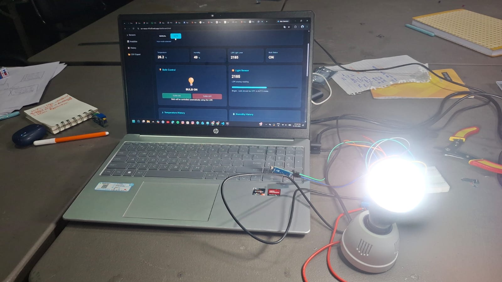
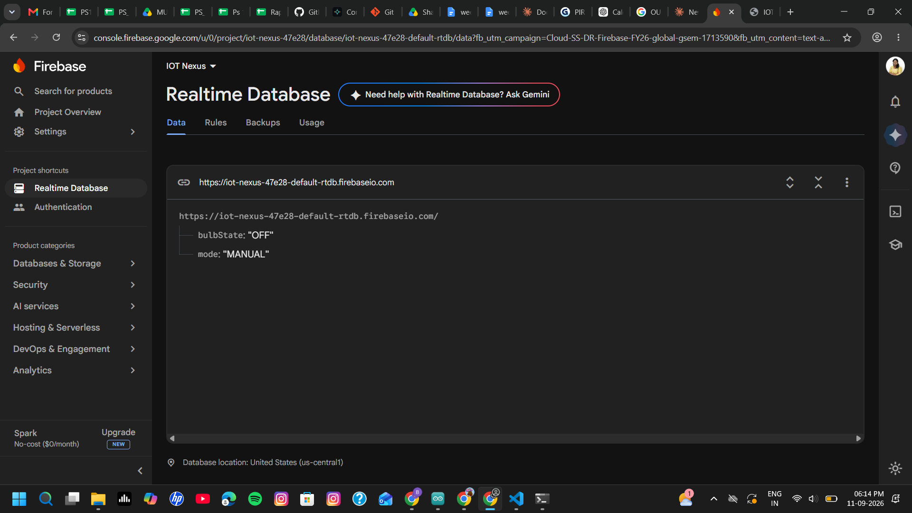
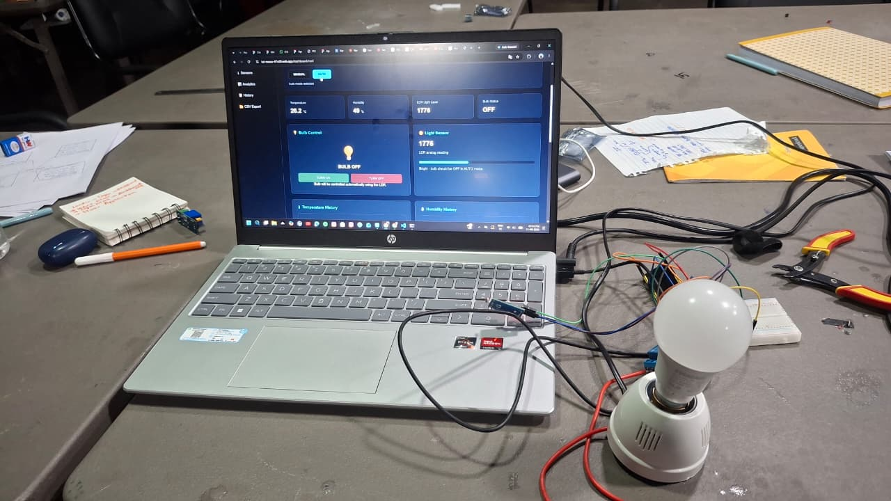

Project Overview
The objective of this assignment was to extend the IoT dashboard so that system activity could be monitored, recorded and exported as usable data.
I developed the dashboard with appliance control, manual and automatic operating modes, historical data display and CSV data export.
The completed system brings the IoT device, Firebase cloud services and the web dashboard together into a single monitoring and control workflow.
Logging & Data Concepts
Data Logging
Data logging records system activity so that previous events can be reviewed instead of observing only the current state.
Historical Data
Historical records allow previous IoT activity to be displayed through a dashboard or table.
Automation
Automation allows the system to operate according to a selected mode or predefined condition rather than requiring every action to be performed manually.
Data Export
Exporting logged information as a CSV file makes the data available for further analysis.
Data Visualization
Visualization provides a clearer way of interpreting recorded IoT information through graphical representations.
Cloud Database
Firebase provides the cloud-based services required by the application for storing and accessing IoT-related information.
Complete System Architecture
The system connects the IoT hardware with Firebase and the web dashboard. The dashboard provides monitoring, control and historical-data functionality, while the logged information can be exported for further use.
Tools Used
Hardware
- ESP32 development board
- IoT monitoring / control hardware
- Output control circuit
- Connecting wires
Software & Platforms
- Visual Studio Code
- HTML
- CSS
- JavaScript
- Firebase
- Web browser
- CSV data export
System Setup
The hardware side of the project uses the ESP32 as the IoT controller. The device communicates with the cloud layer and the web application provides the monitoring and control interface.
The dashboard was structured to provide appliance control, operating-mode selection, threshold configuration, historical data and CSV export.
Development Process
- I prepared the Firebase-connected IoT dashboard for monitoring and control.
- I added appliance-control functions for switching the connected bulb ON and OFF.
- I added manual and automatic operating modes.
- I included an LDR threshold setting in the dashboard for the automatic-control workflow.
- I created a historical-data section so previous activity could be displayed.
- I created a data-log table for recorded activity.
- I implemented a CSV download function so the recorded information could be exported.
- I tested the dashboard through the deployed Firebase web application.
Monitoring, Automation & Export
The dashboard provides separate areas for appliance control, automation settings, historical information and data export.
The dashboard implementation includes manual mode, automatic mode and an adjustable LDR threshold as part of the automation interface.
Open Live IOT Nexus Dashboard →
Project Evidence



CSV Data Export
The completed dashboard includes a CSV download function. I downloaded the exported data and used the resulting CSV file as evidence of the data-export stage.
The exported activity data contains the fields:
Time Mode User Bulb
Download Exported CSV →
Complete System Demonstration
The following video demonstrates the complete IoT system and its working operation.
Problems & Solutions
- Data organization: The dashboard needed a structured way to present current information and previous activity.
- Mode handling: Manual and automatic operating modes needed to be clearly separated in the dashboard interface.
- Historical records: A dedicated data-log section was required so that recorded activity could be reviewed.
- Data export: A CSV download function was added so the recorded information could be taken outside the dashboard for further analysis.
- Dashboard testing: The complete workflow had to be tested from the web interface through to the IoT control system.
What I Learned
This assignment helped me understand how an IoT project can be developed as a complete system rather than only as a hardware-control experiment.
I learned how monitoring, appliance control, operating modes, historical records and data export can be combined in one web dashboard.
The CSV export also helped me understand that IoT data can be taken from the application and used for further analysis outside the dashboard.
Overall, the project gave me practical experience in combining embedded systems, cloud services, web development, automation and data handling.
Project Repository
This assignment page is maintained as part of my IoT Learning portfolio.
View Assignment on GitHub →
Open Live IOT Nexus Dashboard →